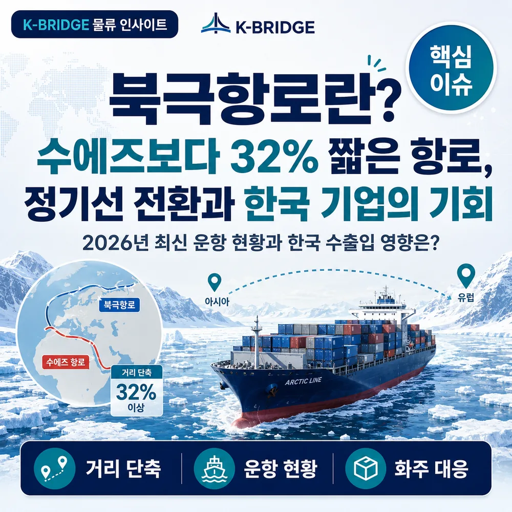
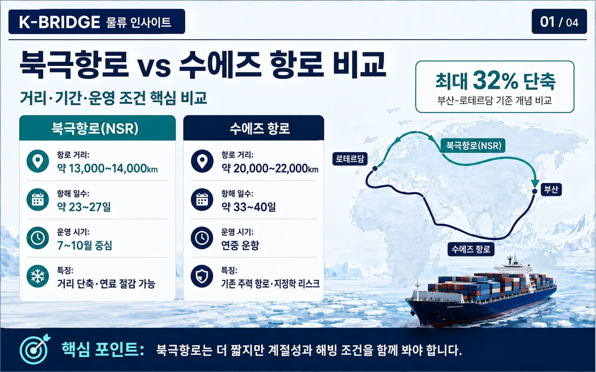
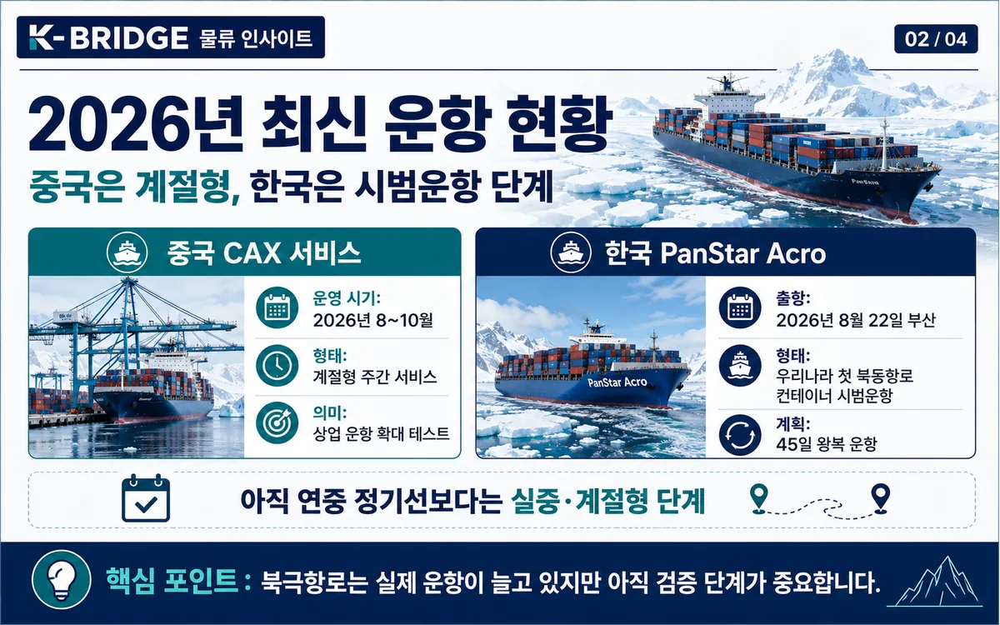
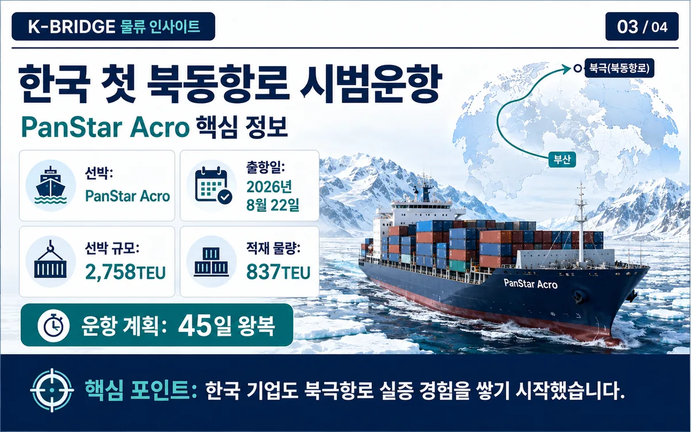
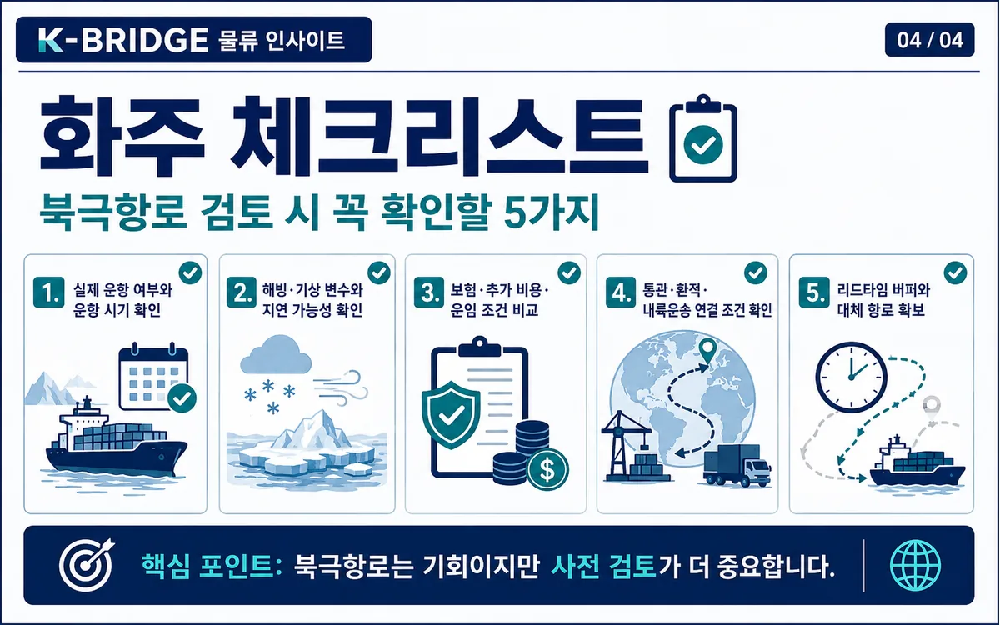

먼저 핵심부터
북극항로는 더 이상 ‘언젠가 가능할 항로’만은 아닙니다. 중국은 2026년 8월 계절형 주간 컨테이너 서비스를 시작했고, 한국도 8월 22일 부산에서 첫 북동항로 컨테이너 왕복 시범운항에 들어갔습니다. 다만 현재 단계는 수에즈항로를 연중 대체하는 글로벌 간선노선이 아니라, 여름·가을에 빠른 운송이 필요한 특정 화물을 대상으로 반복 가능성과 경제성을 검증하는 단계로 보는 것이 정확합니다.
1. 북극항로는 무엇인가요?
‘북극항로’는 하나의 고정된 항로명이라기보다 북극해를 이용해 아시아와 유럽·북미를 연결하는 여러 항로를 통칭합니다. 물류업계에서 가장 현실적인 상업 항로로 논의되는 것은 러시아 북부 연안을 따라 베링해협과 북유럽을 연결하는 북동항로(Northern Sea Route, NSR)입니다.
북서항로는 캐나다 북부를 통과하고, 장기적으로는 북극 중앙을 지나는 횡단항로도 거론되지만, 현재 컨테이너 서비스와 상업운항 논의가 가장 구체적인 곳은 북동항로입니다.
2. 수에즈항로보다 약 30% 짧다는 말은 무엇을 의미할까요?
동북아시아와 북유럽을 같은 기준으로 비교하면 북극항로는 약 1만5,000km, 수에즈항로는 약 2만2,000km로 제시되는 경우가 많습니다. 약 7,000km, 비율로는 약 30% 차이입니다. 운항기간도 북극항로는 약 18~20일, 수에즈항로는 약 30~34일 수준으로 비교됩니다.

납기 단축 효과가 큰 화물일수록 북극항로의 가치가 커질 수 있습니다. 자동차 부품, 계절상품, 전자상거래 상품, 배터리·에너지 관련 제품처럼 재고 회전과 출시 시점이 중요한 화물은 10일 안팎의 차이가 재고비와 판매기회를 바꿀 수 있습니다.
다만 지도 위 거리가 짧다는 사실과 실제 물류비가 싸다는 것은 같은 말이 아닙니다. 쇄빙 지원, 극지 운항 요건, 보험료, 허가, 기상 지연, 선박 크기와 적재효율을 함께 계산해야 실제 경제성이 나옵니다.
3. 2026년에는 ‘시험 운항’에서 ‘계절형 정기 서비스’로 한 단계 넘어갔습니다
2026년 가장 큰 변화는 중국의 China-Europe Arctic Express(CAX)가 단일 시험항차에서 계절형 주간 서비스로 확대됐다는 점입니다. Sea Legend는 8월 15일 닝보저우산에서 첫 항차를 출발시켰고, 8월부터 10월 초까지 총 8항차에 7척을 투입하는 일정을 공개했습니다.
목표 운송시간은 중국에서 영국 펠릭스토우까지 약 20일입니다. 다만 8월 26일 현재 첫 항차는 아직 운항 중이므로, 반복 운항에서 실제 정시성과 평균 리드타임이 얼마나 유지되는지는 이번 시즌 전체 결과를 봐야 합니다.

4. 한국도 8월 22일 부산발 첫 컨테이너 시범운항을 시작했습니다
해양수산부는 8월 22일 2,758TEU급 PanStar Acro를 부산항신항에서 출항시켰습니다. 이번 운항은 우리나라 최초의 북동항로 컨테이너선 시범운항이며, 2016년 이후 10년 만에 우리 선사가 북동항로 운항을 재개한 사례입니다.
선박에는 화학제품, 중고차, 자동차 부품 등 약 737TEU와 공컨테이너 100개를 포함해 총 837TEU가 실렸습니다. 계획상 8월 30일경 북극해역에 진입해 9월 7일경 북극해역을 통과하고, 펠릭스토우·로테르담·그단스크를 차례로 기항한 뒤 10월 5일경 부산으로 돌아옵니다.

이번 시범운항의 목적은 단순히 ‘통과에 성공하는지’를 보는 데 있지 않습니다. 운항거리, 소요기간, 연료소모량, 운항비용, 화물 상태, 화주 수요까지 실제 데이터를 확보해 부산발 서비스의 상업성을 검증하는 것이 핵심입니다.
5. 그렇다면 북극항로가 곧 수에즈항로를 대체할까요?
현재로서는 ‘대체’보다 ‘보완’에 가깝습니다. 수에즈항로는 연중 운항, 대형선 투입, 촘촘한 기항망과 환적망이라는 장점이 있습니다. 반면 북극항로는 운항 가능한 계절, 빙상과 기상, 선박의 내빙성능, 극지운항 전문인력과 허가·지원체계의 영향을 크게 받습니다.
| 구분 | 북극항로 | 수에즈항로 |
|---|---|---|
| 운항 가능성 | 현재는 계절성이 큼 | 연중 운항 가능 |
| 선박 규모 | 내빙성능·수심·빙상 조건 영향 | 초대형 컨테이너선 운항 가능 |
| 일정 안정성 | 해빙·안개·기상 영향 큼 | 상대적으로 예측 가능 |
| 규정 | Polar Code, 극지선박증서 등 | 일반 국제항해 규정 중심 |
| 추가 리스크 | 보험·쇄빙·러시아 관할·제재·환경 | 운하 혼잡·홍해·지정학 리스크 |
IMO Polar Code는 극지수역 운항 선박의 안전·환경 요건을 규정하고 있습니다. 또 MARPOL Annex I 규칙 43A에 따라 북극수역에서는 2024년 7월부터 중질유(HFO)의 사용·사용 목적 운반이 원칙적으로 금지됐고, 일부 예외·유예는 2029년까지 남아 있습니다.

6. 한국 물류에는 어떤 기회가 있을까요?
① 부산항의 동북아 집화·환적 기능
한국발 화물뿐 아니라 일본·중국 등 주변국 화물을 부산에서 모아 북유럽으로 보내는 구조가 가능해진다면 부산항은 북극항로의 동북아 집화 거점 역할을 할 수 있습니다. 다만 이를 위해서는 계절별로 충분한 화물을 모을 수 있는 선복·집화 구조가 먼저 만들어져야 합니다.
② 극지선박·조선·MRO
북극항로가 늘어날수록 내빙·쇄빙 성능을 갖춘 상선, 극지운항 장비, 유지보수와 친환경 연료 공급 수요도 함께 커질 수 있습니다. 한국 조선·해운·항만 역량을 단순 선박 건조가 아니라 서비스 생태계로 연결하는 것이 중요합니다.
③ 납기 민감 화물의 계절형 특송
자동차 부품, 전자상거래, 배터리·에너지 장비, 계절상품처럼 운송시간 단축의 가치가 큰 화물은 초기 북극항로 서비스와 상대적으로 궁합이 좋습니다. 연중 메인 루트를 바꾸기보다는 특정 시즌의 긴급·고부가 화물을 분리해 테스트하는 방식이 현실적입니다.
7. 화주·물류 담당자가 실제로 확인할 체크리스트
- 실제 운항기간과 출항 빈도를 가장 빠른 기록이 아니라 시즌 전체 평균으로 확인합니다.
- 화물의 납기 가치가 추가 보험·운항지원·제약 비용을 상쇄하는지 계산합니다.
- 투입 선박의 Polar Code 요건, 내빙성능, 극지선박증서와 운항 지원체계를 확인합니다.
- 보험·금융·제재 준수 조건을 계약 전 선사·포워더·보험사와 확인합니다.
- 해빙이나 기상으로 일정이 밀릴 때 사용할 대체 항로와 다음 항차를 미리 정합니다.
- 자사 ESG 정책과 북극 생태계·연료 규제·Scope 3 기준에 맞는지 확인합니다.
- 수에즈항로와 비교할 때 기본 운임만이 아니라 총 리드타임·총물류비·재고비·지연 리스크를 함께 비교합니다.
자주 묻는 질문
Q. 북극항로는 정말 수에즈항로보다 32% 짧나요?
Q. 2026년부터 북극항로가 정기선이 된 건가요?
Q. 한국에서 유럽으로 보내는 화물을 바로 북극항로로 전환해도 될까요?
Q. 북극항로의 가장 큰 리스크는 무엇인가요?
유럽향 화물, 가장 빠른 항로보다 가장 안정적인 항로를 비교하세요
케이브릿지는 화물 특성, 납기, 선복, 항로 리스크를 기준으로 수에즈·희망봉·북극항로·복합운송 대안을 함께 비교합니다. 새로운 항로일수록 총비용과 실제 도착 안정성을 함께 확인하는 것이 중요합니다.
참고 자료
· 대한민국 해양수산부, 「우리 컨테이너선, 북극항로를 향한 첫 항해에 나선다」, 2026-08-20
· 대한민국 정책브리핑·Korea.net, 한국 컨테이너선 북극항로 시범운항 관련 자료, 2026-08-24
· International Maritime Organization (IMO), Polar Code / Shipping in polar waters
· China Daily, China-Europe Arctic Express 2026 seasonal weekly service 관련 보도, 2026-06-30 및 2026-08-17
· Reuters, South Korea ship to test Arctic commercial route, 2026-08-22
※ 본 글은 2026년 8월 26일 기준 공개된 공식자료와 주요 보도를 바탕으로 작성했습니다. 실제 항차·운항기간·보험·제재·통항 조건은 예약 시점에 다시 확인해야 합니다.